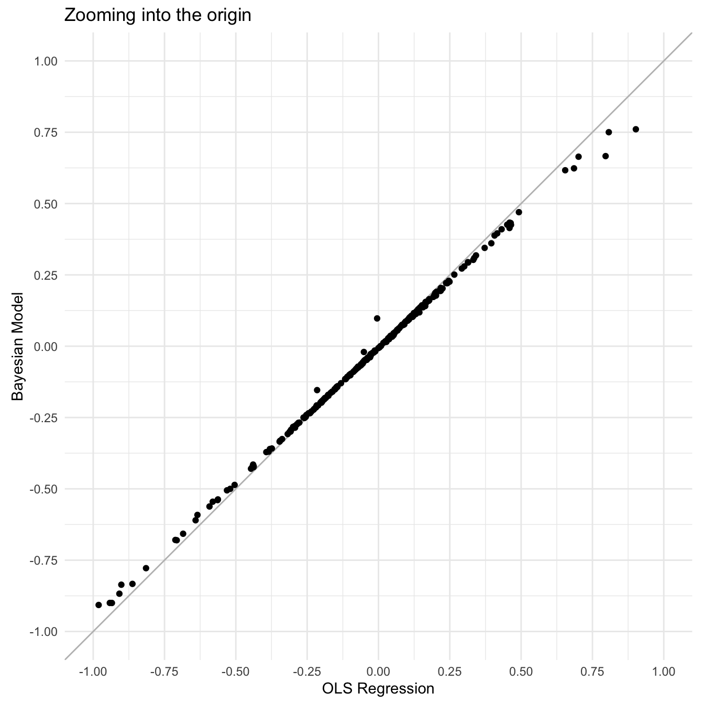

Longitudinal Data
Mar 06, 2025
Review of last lecture
During our last lecture, we introduced correlated (or dependent) data sources.
We discussed the idea of accounting for dependencies within a group using group-specific parameters.
We introduced the random intercept model and studied the induced correlation (forced to be positive) in the marginal model.
Today we will look at longitudinal data and introduce a simple model that accounts for group-level changes.
Longitudinal Data
Repeated measurements taken over time from the same subjects. Examples include:
Monitor Disease Progression : Track how diseases evolve, such as diabetes or glaucoma.
Evaluate Treatments : Understand how interventions work over time.
Personalized Health Insights : Capture individual health trajectories for personalized care.
Study Long-Term Effects : Evaluate the long-term outcomes of medical treatments or behaviors.
Example: Glaucoma Disease Progression
Imagine we are tracking mean deviation (MD, dB), a key measure of visual field loss in glaucoma patients, over time.
Multiple measurements of MD for each patient across several years.
We’re interested in glaucoma progression, which is defined as the rate of change in MD over time (dB/year).
Define \(Y_{it}\) as the MD value for eye \(i\) (\(i = 1,\ldots,n\) ) at time \(t\) (\(t = 1,\ldots,n_i\) ) and the time of each observation as \(X_{it}\) with \(X_{i0} = 0\) .
Treating Eyes Separately
We can model each eye separately using OLS (this is a form of longitudinal analysis!). For \(t = 1,\ldots,n_i\) , the model is:
\[Y_{it} = \beta_{0i} + X_{it} \beta_{1i} + \epsilon_{it}, \quad \epsilon_{it} \stackrel{iid}{\sim} N(0, \sigma_i^2).\]
Where:
\(\beta_{0i}\) is the intercept for eye \(i\) .
\(\beta_{1i}\) is the slope for eye \(i\) (i.e., disease progression).
\(\sigma_i^2\) is the residual error for eye \(i\) .
OLS regression
Treating Eyes Separately
Fitting OLS separately allows each eye to have a unique intercept and slope, which of course is consistent with the data generating process.
However, this can lead to eye-specific intercepts and slopes that are not realistic (consider OLS regression with very few data points).
Estimating eye-specific intercepts and slopes within the context of the whole study sample should shrink extreme values toward the population average.
Subject-specific intercepts and slopes
For \(i = 1,\ldots,n\) and \(t=1,\ldots,n_i\) , we can write the model:
\[\begin{aligned}
Y_{it} &= \beta_{0i} + X_{it} \beta_{1i} + \epsilon_{it}, \quad \epsilon_{it} \stackrel{iid}{\sim} N(0, \sigma^2),\\
\beta_{0i} &= \beta_0 + \theta_{0i},\\
\beta_{1i} &= \beta_1 + \theta_{1i}.
\end{aligned}\]
Population Parameters :
\(\beta_0\) is the population intercept (i.e., average MD value in the population at time zero).
\(\beta_1\) is the population slope (i.e., average disease progression).
\(\sigma^2\) is the population residual error.
Subject-specific intercepts and slopes
For \(i = 1,\ldots,n\) and \(t=1,\ldots,n_i\) , we can write the model:
\[\begin{aligned}
Y_{it} &= \beta_{0i} + X_{it} \beta_{1i} + \epsilon_{it}, \quad \epsilon_{it} \stackrel{iid}{\sim} N(0, \sigma^2),\\
\beta_{0i} &= \beta_0 + \theta_{0i},\\
\beta_{1i} &= \beta_1 + \theta_{1i}.
\end{aligned}\]
Subject-Specific Parameters :
Subject-specific intercepts and slopes
For \(i = 1,\ldots,n\) and \(t=1,\ldots,n_i\) , we can write the model:
\[\begin{aligned}
Y_{it} &= \beta_{0i} + X_{it} \beta_{1i} + \epsilon_{it}, \quad \epsilon_{it} \stackrel{iid}{\sim} N(0, \sigma^2),\\
\beta_{0i} &= \beta_0 + \theta_{0i},\\
\beta_{1i} &= \beta_1 + \theta_{1i}.
\end{aligned}\]
Key Advantage :
This model defines subject-specific estimates of \(\beta_{0i}\) and \(\beta_{1i}\) relative to the population average, preventing overfitting and making the estimates more stable.
Shrinks subject-specific parameters to the population average.
Linear Mixed Model
The subject-specific intercepts and slope model can be seen as a special case of the linear mixed model (LMM). For \(i = 1,\ldots,n\) , LMM is defined as:
\[\mathbf{Y}_i = \mathbf{X}_i \boldsymbol{\beta} + \mathbf{Z}_i \boldsymbol{\theta}_i + \boldsymbol{\epsilon}_i, \quad \boldsymbol{\epsilon}_i \stackrel{ind}{\sim} N_{n_i}(\mathbf{0}_{n_i}, \sigma^2 \mathbf{I}_{n_i}).\]
\(\mathbf{Y}_i = (Y_{i1},\ldots,Y_{in_i})\) are subject-level observations.
\(Y_{it}\) is the \(t\) th observation in subject \(i\) .
\(\boldsymbol{\epsilon}_i = (\epsilon_{i1},\ldots,\epsilon_{in_i})\) , such that \(\epsilon_{it} \stackrel{iid}{\sim} N(0,\sigma^2)\) .
Linear Mixed Model
For \(i = 1,\ldots,n\) , the linear mixed model (LMM) is given by:
\[\mathbf{Y}_i = \mathbf{X}_i \boldsymbol{\beta} + \mathbf{Z}_i \boldsymbol{\theta}_i + \boldsymbol{\epsilon}_i, \quad \boldsymbol{\epsilon}_i \stackrel{ind}{\sim} N_{n_i}(\mathbf{0}_{n_i}, \sigma^2 \mathbf{I}_{n_i}).\]
\(\mathbf{X}_i\) is an \((n_i \times p)\) -dimensional matrix with row \(\mathbf{x}_{it}\) (intercept is incorporated).
\(\mathbf{x}_{it}\) contains variables that are assumed to relate to the outcome only at a population-level.
\(p\) is the number of population-level variables.
Linear Mixed Model
For \(i = 1,\ldots,n\) , the linear mixed model (LMM) is given by:
\[\mathbf{Y}_i = \mathbf{X}_i \boldsymbol{\beta} + \mathbf{Z}_i \boldsymbol{\theta}_i + \boldsymbol{\epsilon}_i, \quad \boldsymbol{\epsilon}_i \stackrel{ind}{\sim} N_{n_i}(\mathbf{0}_{n_i}, \sigma^2 \mathbf{I}_{n_i}).\]
\(\mathbf{Z}_i\) is an \((n_i \times q)\) -dimensional matrix with row \(\mathbf{z}_{it}\) (intercept is incorporated).
\(\mathbf{z}_{it}\) contains variables that are assumed to relate to the outcome with varying effects at a subject-level.
\(q\) is the number of subject-level variables.
Linear Mixed Model
For \(i = 1,\ldots,n\) , the linear mixed model (LMM) is given by:
\[\mathbf{Y}_i = \mathbf{X}_i \boldsymbol{\beta} + \mathbf{Z}_i \boldsymbol{\theta}_i + \boldsymbol{\epsilon}_i, \quad \boldsymbol{\epsilon}_i \stackrel{ind}{\sim} N_{n_i}(\mathbf{0}_{n_i}, \sigma^2 \mathbf{I}_{n_i}).\]
\(\boldsymbol{\beta}\) is a \(p\) -dimensional vector of population-level parameters (or fixed effects).
\(\boldsymbol{\theta}_i\) is a \(q\) -dimensional vector of group-level parameters (or random effects).
\(\sigma^2\) is a population-level parameter that measures residual error.
Recover the Random Intercept Model
For \(i = 1,\ldots,n\) , the linear mixed model (LMM) is given by:
\[\mathbf{Y}_i = \mathbf{X}_i \boldsymbol{\beta} + \mathbf{Z}_i \boldsymbol{\theta}_i + \boldsymbol{\epsilon}_i, \quad \boldsymbol{\epsilon}_i \stackrel{ind}{\sim} N_{n_i}(\mathbf{0}_{n_i}, \sigma^2 \mathbf{I}_{n_i}).\]
Suppose that \(\mathbf{z}_{it} = 1 \forall i,t\) . Then we get
\[\begin{aligned}
Y_{it} &= \mathbf{x}_{it} \boldsymbol{\beta} + \mathbf{z}_{it}\boldsymbol{\theta}_{i} + \epsilon_{it}, \quad \epsilon_{it} \stackrel{iid}{\sim} N(0,\sigma^2)\\
&= \mathbf{x}_{it} \boldsymbol{\beta} + \theta_{i} + \epsilon_{it}.
\end{aligned}\]
LMM is a general form of the random intercept model.
Random Slope and Intercept Model
For \(i = 1,\ldots,n\) , the linear mixed model (LMM) is given by:
\[\mathbf{Y}_i = \mathbf{X}_i \boldsymbol{\beta} + \mathbf{Z}_i \boldsymbol{\theta}_i + \boldsymbol{\epsilon}_i, \quad \boldsymbol{\epsilon}_i \stackrel{ind}{\sim} N_{n_i}(\mathbf{0}_{n_i}, \sigma^2 \mathbf{I}_{n_i}).\]
Suppose that \(\mathbf{x}_{it} = \mathbf{z}_{it} = (1, X_{it})\) , such that \(p = q = 2\) . Then,
\[\begin{aligned}
Y_{it} &= \mathbf{x}_{it} \boldsymbol{\beta} + \mathbf{z}_{it}\boldsymbol{\theta}_{i} + \epsilon_{it}, \quad \epsilon_{it} \stackrel{iid}{\sim} N(0,\sigma^2)\\
&= \beta_0 + \beta_1 X_{it} + \theta_{0i} + \theta_{1i} X_{it} + \epsilon_{it}\\
&= (\beta_0 + \theta_{0i}) + (\beta_1 + \theta_{1i}) X_{it} + \epsilon_{it}.
\end{aligned}\]
where \(\boldsymbol{\beta} = (\beta_0,\beta_1)\) and \(\boldsymbol{\theta}_i = (\theta_{0i},\theta_{1i})\) .
Prior Specification
One choice could be to specify independent priors for the subject-specific intercepts and slopes:
\[\begin{aligned}
\theta_{0i} &\stackrel{iid}{\sim} N(0, \tau_0^2)\\
\theta_{1i} &\stackrel{iid}{\sim} N(0, \tau_1^2).
\end{aligned}\]
This is the same assumption we made last lecture, where we assume a normal distribution centered at zero with some variance that reflects variability across subjects.
Often times this assumption is oversimplified. For example in glaucoma progression, we often assume that if someone has a higher baseline MD they will a more negative slope (i.e., negative correlation).
Prior Specification
We can instead model the subject-specific parameters as correlated themselves using a bi-variate normal distribution. Define \(\boldsymbol{\theta}_i = (\theta_{0i},\theta_{1i})^\top\) and then \(\boldsymbol{\theta}_i \stackrel{iid}{\sim} N_2(\mathbf{0}_2,\boldsymbol{\Sigma})\) .
\[\boldsymbol{\Sigma} = \begin{bmatrix}
\tau_{0}^2 & \tau_{01}\\
\tau_{01} & \tau_1^2\\
\end{bmatrix}.\]
Let’s talk about efficient ways to generate multivariate random variables!
Generating Multivariate Normal RNGs
Suppose we would like to generate samples of a random variable \(\mathbf{x}_i \stackrel{iid}{\sim} N_2(\boldsymbol{\mu}, \boldsymbol{\Sigma})\) .
To sample efficiently, we can decompose the covariance structure:
\[\begin{aligned}
\boldsymbol{\Sigma} &= \begin{bmatrix}
\tau_{0}^2 & \rho \tau_0 \tau_1\\
\rho \tau_0 \tau_1 & \tau_1^2\\
\end{bmatrix}\\
&= \begin{bmatrix}
\tau_{0} & 0\\
0 & \tau_1\\
\end{bmatrix} \begin{bmatrix}
1 & \rho\\
\rho & 1\\
\end{bmatrix} \begin{bmatrix}
\tau_{0} & 0\\
0 & \tau_1\\
\end{bmatrix}\\
&= \mathbf{D} \boldsymbol{\Phi} \mathbf{D}.
\end{aligned}\]
Generating Multivariate Normal RNGs
We can further decompose the covariance by computing the cholesky decomposition of the correlation matrix:
\[\begin{aligned}
\boldsymbol{\Sigma} &= \mathbf{D} \boldsymbol{\Phi} \mathbf{D}\\
&= \mathbf{D} \mathbf{L} \mathbf{L}^\top \mathbf{D},
\end{aligned}\] where \(\mathbf{L}\) is the lower triangular Cholesky decomposition for \(\boldsymbol{\Phi}\) , such that \(\boldsymbol{\Phi} = \mathbf{L} \mathbf{L}^\top\) .
Generating Multivariate Normal RNGs
We can generate samples \(\mathbf{x}_i \stackrel{iid}{\sim} N_2(\boldsymbol{\mu}, \boldsymbol{\Sigma})\) using the following approach:
\[\mathbf{x}_i = \boldsymbol{\mu} + \mathbf{D} \mathbf{L} \mathbf{z}_i,\]
where \(\mathbf{z}_i = (z_{0i},z_{1i})\) and \(z_{ij} \stackrel{iid}{\sim} N(0,1)\) , so that \(\mathbb{E}[\mathbf{z}_i] = \mathbf{0}_2\) and \(\mathbb{C}(\mathbf{z}_i) = \mathbf{I}_2\) .
\[\begin{aligned}
\mathbb{E}[\boldsymbol{\mu} + \mathbf{D}\mathbf{L}\mathbf{z}_i] &= \boldsymbol{\mu} + \mathbf{D}\mathbf{L}\mathbb{E}[\mathbf{z}_i] = \boldsymbol{\mu}\\
\mathbb{C}(\boldsymbol{\mu} + \mathbf{D}\mathbf{L}\mathbf{z}_i) &= \mathbf{D}\mathbf{L}\mathbb{C}(\mathbf{z}_i)\left(\mathbf{D}\mathbf{L}\right)^\top \\
&= \mathbf{D}\mathbf{L}\mathbf{L}^\top\mathbf{D}\\
&=\boldsymbol{\Sigma}.
\end{aligned}\]
Generating Multivariate Normal RNGs
<- matrix (c (3 , 1 , 1 , 3 ), nrow = 2 , ncol = 2 , byrow = TRUE )<- matrix (c (2 , 5 ), ncol = 1 )<- matrix (0 , nrow = 2 , ncol = 2 )diag (D) <- diag (sqrt (Sigma))<- cov2cor (Sigma)<- t (chol (Phi))<- 1000 <- matrix (rnorm (n_samples * 2 ), nrow = 2 , ncol = n_samples)<- matrix (rep (mu, n_samples), nrow = 2 , ncol = n_samples) <- mu_mat + D %*% L %*% zapply (X, 1 , mean)
[,1] [,2]
[1,] 3.0612065 0.9283299
[2,] 0.9283299 2.9567120
Conditional specification
For the conditional specification, we can write the model at the observational level, \(Y_{it}\) . This is because conditionally on the \(\boldsymbol{\theta}_i\) , \(Y_{it}\) and \(Y_{it'}\) are independent.
For \(i\) (\(i = 1,\ldots,n\) ) and \(t\) (\(t = 1,\ldots, n_i\) ), the model is:
\[\begin{aligned}
Y_{it} | \boldsymbol{\Omega}, \boldsymbol{\theta}_i &= (\beta_{0} + \theta_{0i}) + (\beta_1 + \theta_{0i}) X_{it}+ \epsilon_{it}, \quad \epsilon_{it} \stackrel{iid}{\sim} N(0, \sigma^2),\\
\boldsymbol{\theta}_i | \boldsymbol{\Sigma} &\stackrel{iid}{\sim} N_2(\mathbf{0}_2,\boldsymbol{\Sigma})\\
\boldsymbol{\Omega} &\sim f(\boldsymbol{\Omega}),
\end{aligned}\]
where \(\boldsymbol{\Omega} = (\beta_0, \beta_1, \sigma^2, \boldsymbol{\Sigma})\) .
Conditional Specification
Moments for the Conditional Model:
\[\begin{aligned}
\mathbb{E}[Y_{it} | \boldsymbol{\Omega},\boldsymbol{\theta}_i] &= (\beta_0 + \theta_{0i}) + (\beta_1 + \theta_{1i}) X_{it}\\
\mathbb{V}(Y_{it} | \boldsymbol{\Omega},\boldsymbol{\theta}_i) &= \sigma^2\\
\mathbb{C}(Y_{it}, Y_{jt'} | \boldsymbol{\Omega},\boldsymbol{\theta}_i,\boldsymbol{\theta}_{t'}) &= 0,\quad \forall i,j,t,t'
\end{aligned}\]
Conditional Specification
Define \(\mathbf{Y}_i = (Y_{i1},\ldots,Y_{in_i})\) and \(\mathbf{Y} = (\mathbf{Y}_1,\ldots,\mathbf{Y}_n)\) .
The posterior for the conditional model can be written as:
\[\begin{aligned}
f(\boldsymbol{\Omega}, \boldsymbol{\theta} | \mathbf{Y}) &\propto f(\mathbf{Y}, \boldsymbol{\Omega}, \boldsymbol{\theta})\\
&= f(\mathbf{Y} | \boldsymbol{\Omega}, \boldsymbol{\theta}) f(\boldsymbol{\theta} | \boldsymbol{\Omega})f(\boldsymbol{\Omega})\\
&= \prod_{i=1}^n \prod_{t = 1}^{n_i} f(Y_{it} | \boldsymbol{\Omega}, \boldsymbol{\theta}) \prod_{i=1}^n f(\boldsymbol{\theta}_i | \boldsymbol{\Sigma}) f(\boldsymbol{\Omega}),
\end{aligned}\] where \(\boldsymbol{\theta} = (\boldsymbol{\theta}_1,\ldots,\boldsymbol{\theta}_n)\) .
Marginal Specification
The LMM model is given by:
\[\mathbf{Y}_i = \mathbf{X}_i \boldsymbol{\beta} + \mathbf{Z}_i \boldsymbol{\theta}_i + \boldsymbol{\epsilon}_i, \quad \boldsymbol{\epsilon}_i \stackrel{ind}{\sim} N_{n_i}(\mathbf{0}_{n_i}, \sigma^2 \mathbf{I}_{n_i}).\]
Moments for the Marginal Model:
\[\begin{aligned}
\mathbb{E}[\mathbf{Y}_{i} | \boldsymbol{\Omega}] &= \mathbf{X}_i\boldsymbol{\beta}\\
\mathbb{V}(\mathbf{Y}_{i} | \boldsymbol{\Omega}) &= \mathbf{Z}_i \boldsymbol{\Sigma} \mathbf{Z}_i^\top + \sigma^2 \mathbf{I}_{n_i} = \boldsymbol{\Upsilon}_i\\
\mathbb{C}(\mathbf{Y}_{i}, \mathbf{Y}_{i'} | \boldsymbol{\Omega}) &= \mathbf{0}_{n_i \times n_i},\quad i \neq i'.
\end{aligned}\]
Marginal Specification
For \(i = 1,\ldots,n\) , \[\begin{aligned}
\mathbf{Y}_{i} | \boldsymbol{\Omega} &\stackrel{ind}{\sim} N(\mathbf{X}_i\boldsymbol{\beta},\boldsymbol{\Upsilon}_i)\\
\boldsymbol{\Omega} &\sim f(\boldsymbol{\Omega}),
\end{aligned}\] where \(\boldsymbol{\Omega} = (\boldsymbol{\beta},\sigma,\boldsymbol{\Sigma})\) are the population parameters.
Recovering the Subject-Specific Parameters
We can still recover the \(\boldsymbol{\theta}_i\) when we fit the marginal model, we only need to compute \(f(\boldsymbol{\theta}_i | \mathbf{Y}_i,\boldsymbol{\Omega})\) for all \(i\) .
We can obtain this full conditional by specifying the joint distribution,
\[f\left(\begin{bmatrix}
\mathbf{Y}_i\\
\boldsymbol{\theta}_i
\end{bmatrix} \Bigg| \boldsymbol{\Omega}\right) = N\left(\begin{bmatrix}
\mathbf{X}_i \boldsymbol{\beta} \\
\mathbf{0}_{n_1}
\end{bmatrix}, \begin{bmatrix}
\boldsymbol{\Upsilon}_i & \mathbf{Z}_i\boldsymbol{\Sigma}\\
\boldsymbol{\Sigma} \mathbf{Z}_i^\top & \boldsymbol{\Sigma}
\end{bmatrix}\right).\]
We can then use the conditional specification of a multivariate normal to find, \(f(\boldsymbol{\theta}_i | \mathbf{Y}_i, \boldsymbol{\Omega}) = N(\mathbb{E}_{\boldsymbol{\theta}_i},\mathbb{V}_{\boldsymbol{\theta}_i})\) , where
\[\begin{aligned}
\mathbb{E}_{\boldsymbol{\theta}_i} &= \mathbf{0}_{n_i} + \boldsymbol{\Sigma} \mathbf{Z}_i^\top \boldsymbol{\Upsilon}_i^{-1} (\mathbf{Y}_i - \mathbf{X}_i \boldsymbol{\beta})\\
\mathbb{V}_{\boldsymbol{\theta}_i} &= \boldsymbol{\Sigma} - \boldsymbol{\Sigma} \mathbf{Z}_i^\top \boldsymbol{\Upsilon}_i^{-1} \mathbf{Z}_i\boldsymbol{\Sigma}.
\end{aligned}\]
Marginal Specification
It is not as straightforward to gain intuition behind the induced correlation structure, but we can shed some light by studying the scalar form of the covariance:
\[\begin{aligned}
\mathbb{V}(Y_{it}| \boldsymbol{\Omega}) &= \tau_0^2 + 2 \tau_{01} X_{it}^2 + \tau_1^2 X_{it}^2 + \sigma^2,\\
\mathbb{C}(Y_{it}, Y_{it'} | \boldsymbol{\Omega}) &= \tau_0^2 - \rho \tau_0 \tau_1 (X_{it} - X_{it'}) + \tau_1^2 X_{it} X_{it'}.
\end{aligned}\]
Visualizing the dependency
\(\tau_0 = 1,\tau_1 = 1,\sigma^2 =2, \rho = 0.5\)
Visualizing the dependency
\(\tau_0 = 1,\tau_1 = 1,\sigma^2 =2, \rho = -0.5\)
Marginal Specification
The posterior for the conditional model can be written as:
\[\begin{aligned}
f(\boldsymbol{\Omega} | \mathbf{Y}) &\propto f(\mathbf{Y}, \boldsymbol{\Omega})\\
&= f(\mathbf{Y} | \boldsymbol{\Omega})f(\boldsymbol{\Omega})\\
&= \prod_{i=1}^n f(\mathbf{Y}_{i} | \boldsymbol{\Omega}) f(\boldsymbol{\Omega}).
\end{aligned}\]
Specifying a Prior Distribution for \(\boldsymbol{\Omega}\)
We must set a prior for \(f(\boldsymbol{\Omega}) = f(\boldsymbol{\beta}) f(\sigma) f(\boldsymbol{\Sigma})\) .
We can place standard priors on \(\boldsymbol{\beta}\) and \(\sigma\) .
\(\boldsymbol{\Sigma}\) is a covariance (i.e., positive definite matrix), so we must be careful here.
It is natural to place a prior on the decomposition, \(\boldsymbol{\Sigma} = \mathbf{D} \mathbf{L} \mathbf{L}^\top \mathbf{D}\) .
For each of the standard deviations \((\tau_0,\tau_1)\) we can place standard priors for scales (e.g., half-normal).
For \(\mathbf{L}\) we can place a Lewandowski-Kurowicka-Joe (LKJ) distribution, \(\mathbf{L} \sim LKJ(\eta)\) .
What Does the LKJ Prior Do?
The LKJ prior allows you to model the correlation structure in a flexible and non-informative way.
It is defined by a single parameter, \(\eta > 0\) , which controls the concentration of the prior.
When \((\eta = 1)\) , it is an uninformative prior (i.e., uniform on the correlations).
When \((\eta > 1)\) , the prior favors more highly correlated random effects.
When \((\eta < 1)\) , the prior favors weaker correlations.
When \(q=2\) , \(\eta = 1\) is equivalent to \(\rho \sim \text{Uniform}(-1,1)\) .
LKJ Prior in Stan
parameters {cholesky_factor_corr [2 ] L; // Cholesky factor of correlation matrix model {
Stan code for independent intercept and slope
// lmm-independent.stan data {int <lower = 1 > n;int <lower = 1 > N;vector [N] Time;vector [N] MD;int <lower = 1 , upper = n> Ids[N];parameters {real beta0;real beta1;real <lower = 0 > sigma;vector [n] z0;vector [n] z1;real <lower = 0 > tau0;real <lower = 0 > tau1;transformed parameters {vector [n] theta0;vector [n] theta1;model {// likelihood vector [N] mu;for (i in 1 :N) {target += normal_lpdf(MD | mu, sigma);// subject-specific parameters target += std_normal_lpdf(z0);target += std_normal_lpdf(z1);// population parameters target += normal_lpdf(beta0 | 0 , 3 );target += normal_lpdf(beta1 | 0 , 3 );target += normal_lpdf(sigma | 0 , 3 );target += normal_lpdf(tau0 | 0 , 3 );target += normal_lpdf(tau1 | 0 , 3 );
Stan code for conditional LMM
// lmm-conditional.stan data {int <lower = 1 > N;int <lower = 1 > n;int <lower = 1 > p;int <lower = 1 > q;matrix [N, p] X;matrix [N, q] Z;vector [N] Y;int <lower = 1 , upper = n> Ids[N];real <lower = 0 > eta;parameters {vector [p] beta;real <lower = 0 > sigma;matrix [q, n] z;vector <lower = 0 >[q] tau;cholesky_factor_corr [2 ] L;transformed parameters {matrix [q, n] theta;model {// likelihood vector [N] mu;for (i in 1 :N) {target += normal_lpdf(Y | mu, sigma);// subject-specific parameter target += std_normal_lpdf(to_vector(z));// population parameters target += normal_lpdf(beta | 0 , 3 );target += normal_lpdf(sigma | 0 , 3 );target += normal_lpdf(tau | 0 , 3 );target += lkj_corr_cholesky_lpdf(L | eta);generated quantities {corr_matrix [q] Phi = L * transpose(L);real rho = Phi[1 , 2 ];vector [n] subject_intercepts = beta[1 ] + to_vector(theta[1 , ]);vector [n] subject_slopes = beta[2 ] + to_vector(theta[2 , ]);vector [N] Y_pred;vector [N] log_lik;vector [N] mu;for (i in 1 :N) {
Stan code for marginal LMM
Need ragged data structure .
// lmm-marginal.stan data {int <lower = 1 > N;int <lower = 1 > n;int <lower = 1 > p;int <lower = 1 > q;matrix [N, p] X;matrix [N, q] Z;vector [N] Y;int <lower = 1 > n_is[n];real <lower = 0 > eta;parameters {vector [p] beta;real <lower = 0 > sigma;vector <lower = 0 >[q] tau;cholesky_factor_corr [2 ] L;transformed parameters {cov_matrix [q] Sigma;model {// evaluate the likelihood for the marginal model using ragged data structure int pos;1 ;for (i in 1 :n) {int n_i = n_is[i];vector [n_i] Y_i = segment(Y, pos, n_i);matrix [n_i, p] X_i;matrix [n_i, q] Z_i;for (j in 1 :p) X_i[, j] = segment(X[, j], pos, n_i);for (j in 1 :q) Z_i[, j] = segment(Z[, j], pos, n_i);vector [n_i] mu_i = X_i * beta;matrix [n_i, n_i] Upsilon_i = (sigma * sigma) * diag_matrix(rep_vector(1.0 , n_i)) + Z_i * Sigma * transpose(Z_i);target += multi_normal_lpdf(Y_i | mu_i, Upsilon_i);// population parameters target += normal_lpdf(beta | 0 , 3 );target += normal_lpdf(sigma | 0 , 3 );target += normal_lpdf(tau | 0 , 3 );target += lkj_corr_cholesky_lpdf(L | eta);generated quantities {corr_matrix [q] Phi = L * transpose(L);real rho = Phi[1 , 2 ];matrix [q, n] theta;int pos;1 ;for (i in 1 :n) {int n_i = n_is[i];vector [n_i] Y_i = segment(Y, pos, n_i);matrix [n_i, p] X_i;matrix [n_i, q] Z_i;for (j in 1 :p) X_i[, j] = segment(X[, j], pos, n_i);for (j in 1 :q) Z_i[, j] = segment(Z[, j], pos, n_i);vector [n_i] mu_i = X_i * beta;matrix [q, n_i] M = Sigma * transpose(Z_i) * inverse_spd(Z_i * Sigma * transpose(Z_i) + (sigma * sigma) * diag_matrix(rep_vector(1.0 , n_i)));vector [q] mean_theta_i = M * (Y_i - mu_i);matrix [q, q] cov_theta_i = Sigma - M * Z_i * Sigma;vector [n] subject_intercepts = beta[1 ] + to_vector(theta[1 , ]);vector [n] subject_slopes = beta[2 ] + to_vector(theta[2 , ]);
Glaucoma Disease Progression Data
<- readRDS ("glaucoma_longitudinal.rds" )head (glaucoma_longitudinal)
pat_id eye_id mean_deviation time age iop
1 1 1 -7.69 0.0000000 51.55616 10.87303
2 1 1 -9.95 0.5753425 51.55616 10.87303
3 1 1 -9.58 1.0547945 51.55616 10.87303
4 1 1 -9.53 1.5726027 51.55616 10.87303
5 1 1 -9.18 2.0136986 51.55616 10.87303
6 1 1 -9.63 2.5671233 51.55616 10.87303
length (unique (glaucoma_longitudinal$ eye_id))nrow (glaucoma_longitudinal)
Fitting the Conditional Model in Stan
<- model.matrix (~ time, data = glaucoma_longitudinal)<- list (N = nrow (glaucoma_longitudinal),n = n_eyes,p = ncol (X),q = ncol (X),X = X,Z = X,Y = glaucoma_longitudinal$ mean_deviation,Ids = glaucoma_longitudinal$ eye_id,eta = 1 <- stan_model (model_code = "lmm-conditional.stan" )<- sampling (lmm_conditional, stan_data, iter = 5000 , pars = c ("z" , "theta" ), include = FALSE )
Assessing Convergence
traceplot (fit_lmm_conditional, pars = c ("beta" , "sigma" , "tau" , "rho" ))
Assessing Convergence
library (bayesplot):: mcmc_acf (fit_lmm_conditional, regex_pars = c ("beta" , "sigma" , "tau" , "rho" ))
Posterior Summaries
print (fit_lmm_conditional, pars = c ("beta" , "sigma" , "tau" , "rho" ))
Inference for Stan model: anon_model.
4 chains, each with iter=5000; warmup=2500; thin=1;
post-warmup draws per chain=2500, total post-warmup draws=10000.
mean se_mean sd 2.5% 25% 50% 75% 97.5% n_eff Rhat
beta[1] -8.19 0.04 0.47 -9.15 -8.50 -8.19 -7.86 -7.34 178 1.03
beta[2] -0.10 0.00 0.03 -0.16 -0.12 -0.10 -0.08 -0.05 778 1.00
sigma 1.27 0.00 0.01 1.24 1.26 1.26 1.27 1.29 15569 1.00
tau[1] 8.07 0.02 0.34 7.46 7.83 8.05 8.29 8.79 364 1.01
tau[2] 0.44 0.00 0.02 0.40 0.42 0.44 0.45 0.48 2064 1.00
rho -0.27 0.00 0.06 -0.38 -0.31 -0.27 -0.23 -0.16 949 1.00
Samples were drawn using NUTS(diag_e) at Tue Mar 4 15:18:54 2025.
For each parameter, n_eff is a crude measure of effective sample size,
and Rhat is the potential scale reduction factor on split chains (at
convergence, Rhat=1).
Fitting the Marginal Model in Stan
<- model.matrix (~ time, data = glaucoma_longitudinal)<- list (N = nrow (glaucoma_longitudinal),n = n_eyes,p = ncol (X),q = ncol (X),X = X,Z = X,Y = glaucoma_longitudinal$ mean_deviation,n_is = as.numeric (table (glaucoma_longitudinal$ eye_id)),eta = 1 <- stan_model (model_code = "lmm-marginal.stan" )<- sampling (lmm_marginal, stan_data, iter = 5000 )
Assessing Convergence
traceplot (fit_lmm_marginal, pars = c ("beta" , "sigma" , "tau" , "rho" ))
Assessing Convergence
library (bayesplot):: mcmc_acf (fit_lmm_marginal, regex_pars = c ("beta" , "sigma" , "tau" , "rho" ))
Posterior Summaries
print (fit_lmm_marginal, pars = c ("beta" , "sigma" , "tau" , "rho" ))
Inference for Stan model: anon_model.
4 chains, each with iter=5000; warmup=2500; thin=1;
post-warmup draws per chain=2500, total post-warmup draws=10000.
mean se_mean sd 2.5% 25% 50% 75% 97.5% n_eff Rhat
beta[1] -8.23 0 0.47 -9.16 -8.55 -8.23 -7.92 -7.31 12896 1
beta[2] -0.10 0 0.03 -0.16 -0.12 -0.10 -0.08 -0.05 13230 1
sigma 1.27 0 0.01 1.24 1.26 1.26 1.27 1.29 13937 1
tau[1] 8.05 0 0.34 7.42 7.82 8.04 8.27 8.75 14264 1
tau[2] 0.44 0 0.02 0.40 0.42 0.44 0.45 0.48 13997 1
rho -0.27 0 0.06 -0.38 -0.31 -0.28 -0.24 -0.16 12487 1
Samples were drawn using NUTS(diag_e) at Tue Mar 4 11:31:23 2025.
For each parameter, n_eff is a crude measure of effective sample size,
and Rhat is the potential scale reduction factor on split chains (at
convergence, Rhat=1).
Comparing LMM versus OLS
Comparing LMM versus OLS
